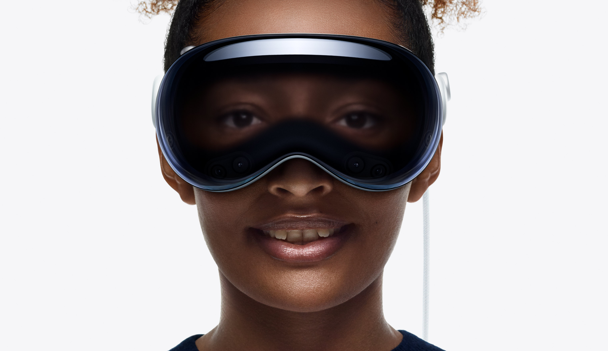

Apple Vision Pro
- Overview
- Guided Tour
- Tech Specs
Apple Vision Pro seamlessly blends digital
content with your physical space.
So you can work, watch, relive memories, and
connect in ways never before possible.
The era of spatial computing is here.
Entertainment
The ultimate theater.
Wherever you are.
A new dimension for
entertainment.
Apple Vision Pro can transform any room into your own personal theater. Expand your movies, shows, and
games to your perfect size and experience them in Spatial Audio. Apple Immersive Video puts you in the
center of the action with mind‑blowing immersion. And with more pixels than a 4K TV for each eye, you
can enjoy stunning content wherever you are — on a long flight or the couch at home.
Productivity
A workspace with
infinite space.
Discover new ways
to work.
Apple Vision Pro gives you limitless space to get things done. Organize everything you need anywhere
around you, in any way you like. Seamlessly bring in your Mac workflows using Mac Virtual Display.
Connect a Magic Keyboard, a Magic Trackpad, and other Bluetooth accessories to expand how you navigate.
And with SharePlay in FaceTime, you can collaborate with colleagues using apps together in real time.
Photos and Videos
Be in the moment.
All over again.
Your memories
come alive.
Apple Vision Pro is Apple’s first 3D camera. You can capture magical spatial photos and spatial videos
in 3D, then relive those cherished moments like never before with immersive Spatial Audio. Your existing
library of photos and videos looks incredible at remarkable scale — and now you can transform your 2D
photos into spatial photos with just a tap. Even panoramas wrap around you — making you feel like you’re
standing right where you took them. You can also take spatial videos with iPhone 16 Pro, iPhone 16, or
iPhone 15 Pro, as well as spatial photos with iPhone 16 Pro or iPhone 16, then view them on Apple Vision
Pro.
Connection
Share quality time.
And space.
A more engaging way
to get together..
Apple Vision Pro makes it easy to collaborate and connect wherever you are. You can see FaceTime
participants in life-size video tiles, or you can choose to use your spatial Persona and feel like you
are sharing the same space with others. And use SharePlay to watch, listen, and play together with your
favorite people.
Apps
Do what you love.
Reimagine how
you do it.
A world of apps.
A world of discovery.
Apple Vision Pro expands the experience of your go‑to apps and opens up new possibilities in
entertainment, productivity, gaming, and more. Browse the web in Safari, create a to‑do list in Notes,
chat in Messages, and seamlessly move between them with a glance. And explore the App Store to discover
an ever-expanding collection of awe-inspiring spatial apps designed for Apple Vision Pro.
Visit the App Store
visionOS
An operating system
designed for spatial.
Navigate spatial
experiences.
Naturally.
Built on the foundation of macOS, iOS, and iPadOS, visionOS
enables powerful spatial experiences.
Control
Apple Vision Pro with your eyes, hands, and voice —
interactions feel intuitive and
magical. Simply look at an
element, tap your fingers together to select, and use the
virtual
keyboard or dictation to type. And visionOS 2 delivers
even more ways to enhance work,
entertainment, and
connecting with friends and family using Apple Vision Pro.
Learn
more about visionOS 2 >
Design
Designed by Apple.
Apple Vision Pro is the result of decades of experience designing high‑performance, mobile, and wearable
devices — culminating in the most ambitious product Apple has ever created. Apple Vision Pro integrates
incredibly advanced technology into an elegant, compact form, resulting in an amazing experience every
time you put it on.
Front. A singular piece of three-dimensionally formed laminated
glass flows into an aluminum alloy frame that curves to wrap around your face.
Light Seal.The Light Seal gently flexes to conform to your face,
delivering a precise fit while blocking out stray light.
Head bands.The Solo Knit Band provides cushioning, breathability,
and stretch, and a Fit Dial lets you adjust Apple Vision Pro precisely to your head. The Dual Loop
Band offers an additional option for a personalized fit.
Power.The external battery supports up to 2 hours of general use and
up to 2.5 hours of video playback.1
Sound. Speakers positioned close to your ears deliver rich Spatial
Audio while keeping you aware of your surroundings.

EyeSight.An outward display reveals your eyes while wearing Apple Vision Pro,
letting others know when you are using apps or fully immersed.
A singular piece of three-dimensionally formed laminated glass
acts as an optical surface for the cameras and sensors that view
the world. It flows seamlessly into a custom aluminum alloy frame
that gently curves to wrap around your face while serving as an
attachment point for the Light Seal.

Technology
Innovation you can
see, hear, and feel.
Pushing boundaries from the inside out.Spatial experiences on
Apple Vision Pro are only possible through groundbreaking Apple
technology. Displays the size of a postage stamp that deliver more pixels
than a 4K TV to each eye. Incredible advances in Spatial Audio. A
revolutionary dual‑chip design featuring custom Apple silicon. A
sophisticated array of cameras and sensors. All the elements work together
to create an unprecedented experience you have to see to believe.
More pixels than a 4K TV. For each eye.
The custom micro‑OLED display system features 23 million pixels,
delivering stunning resolution and colors. And a specially designed
three‑element lens creates the feeling of a display that’s everywhere
you look.
Our most advanced
Spatial Audio system ever.
Dual-driver audio pods positioned next to each ear deliver personalized sound while letting you hear
what’s around you. Spatial Audio makes sounds feel like they’re coming from
your surroundings. Audio ray tracing analyzes your room’s acoustic properties to adapt and match sound
to your space. And if you want to use headphones with Apple Vision Pro, AirPods Pro 2 with USB‑C and
AirPods 4 offer the perfect experience — featuring Lossless Audio with ultra-low latency, supported by
the H2‑to‑H2 connection across devices.
Responsive, precision eye tracking.
A high‑performance eye‑tracking system of LEDs and infrared
cameras projects invisible light patterns onto each eye. This advanced system provides
ultraprecise input without your needing to hold any controllers, so you can accurately select elements just
by looking at them.
A sophisticated sensor array.
A pair of high-resolution camerastransmit over one billion pixels per second to
the displays so you can see the world around you clearly.The system also helps deliver precise head and hand trackingand real‑time 3D
mapping,all while understanding your hand gestures from a wide range of positions.
Revolutionary dual‑chip
performance.
A unique dual‑chip design enables the spatial experiences on Apple Vision Pro. The powerful M2 chip simultaneously runs visionOS, executes advanced computer vision
algorithms, and delivers stunning graphics, all with incredible efficiency. And the brand-new R1 chip is specifically dedicated to process input from the cameras, sensors, and
microphones, streaming images to the displays within 12 milliseconds — for a virtually lag-free, real-time
view of the world.
Values
Designed to make
a difference.
Our values lead the way. Apple Vision Pro was designed to help protect your
privacy and keep you in control of your data. Its built‑in accessibility features are designed to work the
way you do.
Use AR to view
Apple
Vision Pro.
Open this page using Safari on
your iPhone or iPad.
Explore
Apple
Vision Pro
accessories..
Shop >
An all‑new platform.
An all‑new world for developers.
The possibilities for what developers can dream up and build for Apple Vision Pro are endless. And with
familiar tools and frameworks like Xcode, SwiftUI, RealityKit, and ARKit, as well as support for Unity
and the 3D-content preparation app Reality Composer Pro, developers have everything they need to create
amazing spatial experiences.
Learn more about developing for visionOS
1. Testing conducted by Apple in November 2023 using preproduction Apple Vision Pro units and software.
Testing consisted of full battery discharge while performing each of the following tasks: video playback,
internet browsing, spatial video capture, and FaceTime. Video playback tested in conjunction with an
Environment, using 2D movie content purchased from the Apple TV app. Internet browsing tested using 20
popular websites. FaceTime tested between two Apple Vision Pro units with Personas enabled. Tested with
Wi-Fi associated to a network. Battery life depends on device settings, usage, network, environmental
conditions, and many other factors. Battery tests are conducted using specific Apple Vision Pro units;
actual results may vary.
2. Subscription required for MLS Season Pass.
3. ™/© 2024 MLB. Apple TV+ requires a subscription.
4. Ultrawide Mac Virtual Display requires a Mac computer with macOS Sequoia 15.2 and Apple Vision Pro with
visionOS 2.2.
5. Valid prescription required. Not all prescriptions are supported. Vision correction accessories
are sold separately.
Some Apple Vision Pro titles coming later.
A subscription may be required for some services. Not all content may be available in all areas.
Disney+ subscription required.
Avatar: The Way of Water © 2022 20th Century Studios and TSG Entertainment Finance LLC.
Users must be 13 years or older.
Available in the U.S. on apple.com, in the Apple Store app, and at Apple Stores.
> Apple Vision Pro